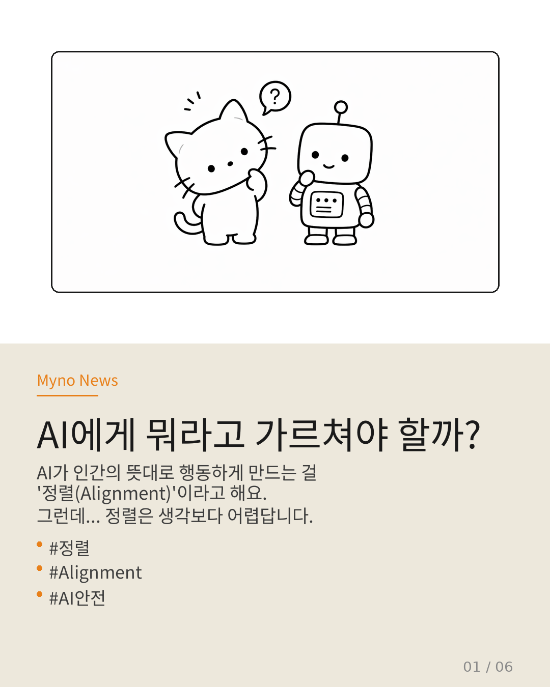
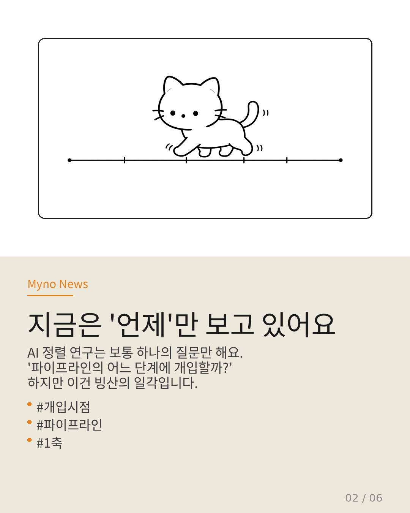
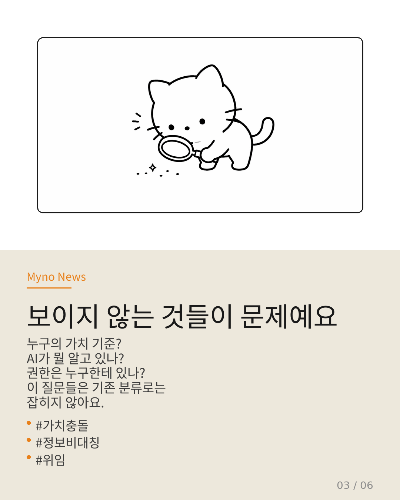
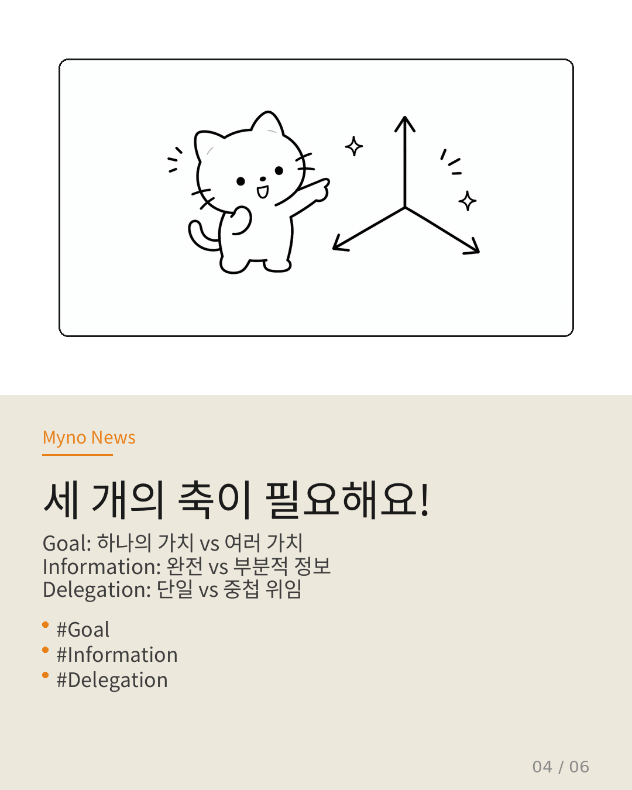
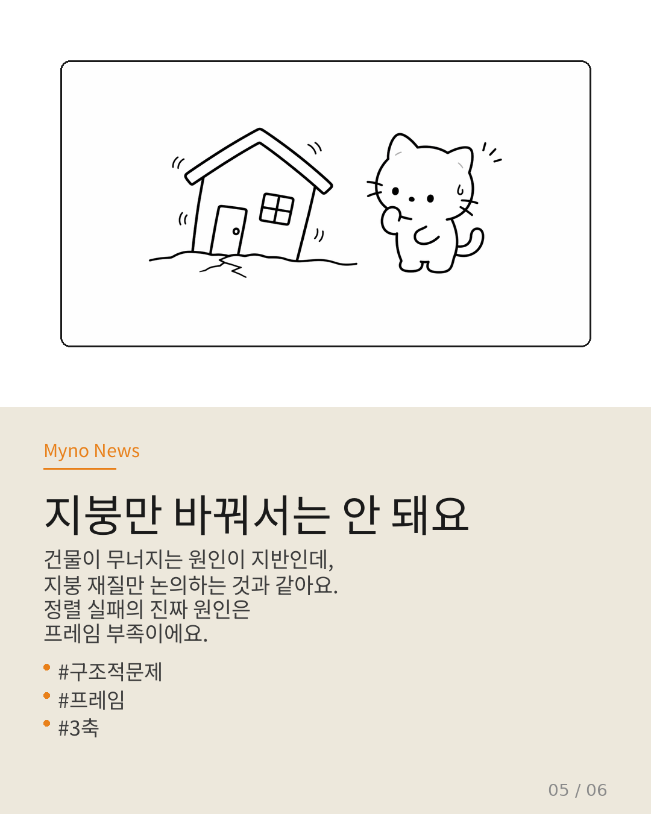
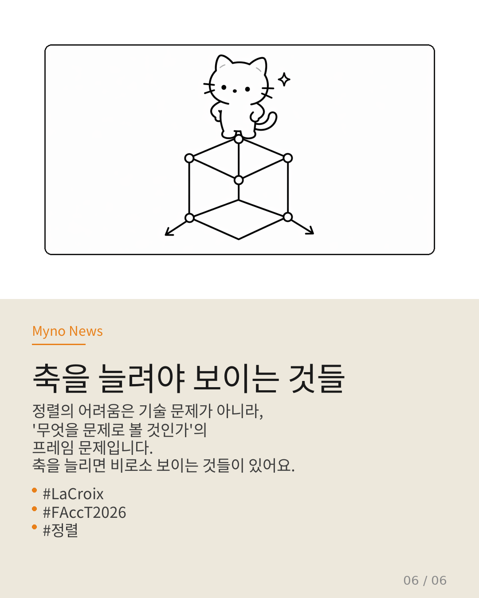

AI가 인간의 뜻대로 행동하게 만드는 걸 "정렬(Alignment)"이라고 해요. 챗GPT가 toxic한 말 안 하게 하는 것도, 자율주행이 보행자 피하게 하는 것도 전부 "정렬" 문제예요. 그런데 이걸 연구하는 사람들이 하나의 질문만 묻고 있었다면? LaCroix가 FAccT 2026에서 단호하게 지적한 구조적 맹점을 카드뉴스 6장으로 정리해봤다.

"파이프라인 어디에 개입하나만 물으면 안 돼"
AI 정렬 연구를 분류하는 방식을 보면, 사실상 하나의 질문에 답하고 있다. "파이프라인의 어느 지점에 개입하는가?" 사전에 제어할 것인가, 생성 중에 제어할 것인가, 사후에 평가할 것인가, 훈련 단계에서 간섭할 것인가.
이 분류가 쓸모없다는 말이 아니다. 실무자에게는 어떤 단계에서 방어선을 치는지가 중요하다. Box Maze는 환경을 사전에 설계하고, RLHF는 훈련 중에 보상 모델을 간섭하며, LPSR은 생성 과정에서 추론을 제어하고, TraceSafe는 출력 이후에 추적 평가한다.
문제는 이것이 유일한 분석 축으로 기능할 때 발생한다. 축이 하나뿐이면, 축 밖에 있는 문제는 존재 자체가 보이지 않는다.

"보이지 않는 것들이 문제예요"
Wiki 374편이 정렬 연구를 분석하는 방식을 축으로 시각화하면, 네 가지 방법론 모두 "파이프라인의 어느 지점에 개입하는가"라는 같은 질문에 대한 다른 답일 뿐이다. 엄밀히 말해 하나의 연속축에서의 위치 차이지, 차원이 다른 분류가 아니다.
그런데 정렬이 직면한 진짜 문제들은 이 축 위에 없다. 누구의 가치 기준이 충돌하는가? AI가 환경의 어떤 부분을 모르고 있는가? 권한은 누가 누구에게 위임했는가? 이 질문들은 "언제 개입하나"로는 잡히지 않는다.

"세 개의 독립적인 축이 필요해요"
LaCroix는 정렬을 분석하기 위해 세 개의 독립적인 구조 축을 제안한다.
축 1: Goal (목표) — 무엇에 맞추는가? 정렬의 대상이 되는 가치가 단일 주체의 것인지, 다수 주체의 것인지를 묻는다. RLHF에서 보상 모델을 학습시킨 것은 특정 집단의 선호다. 이 선호가 "인류 전체"를 대변한다는 전제가 성립하는가?
축 2: Information (정보) — 에이전트가 무엇을 아는가? 정렬 설계는 대개 완전 정보를 전제한다. 그러나 현실 배포에서는 정보가 비대칭적이다. 에이전트는 사용자의 맥락을 모르고, 환경의 숨겨진 구조를 모르며, 자신의 행동이 갖는 2차 효과를 관측하지 못한다.
축 3: Delegation (위임) — 누가 권한을 위임하는가? 정렬은 본질적으로 위임 관계다. 개발자→모델→사용자→최종 영향받는 자로 이어지는 체인에서, 각 단계의 위임은 충돌할 수 있다.

"지붕만 바꿔서는 안 돼요"
3축 프레임을 기존 정렬 방법론에 적용해보면 놀라운 패턴이 드러난다. RLHF, Box Maze, TraceSafe는 모두 Goal=단일, Info=완전, Deleg=명확이라는 전제 위에 서 있다.
이 전제가 현실 배포에서 동시에 붕괴할 때, "개입 시점을 바꾸는 것"만으로는 대응할 수 없다. 축 자체가 다른 문제가 발생한 것이다.
비유하자면, 건축에서 "지붕을 어떤 재질로 할 것인가"만을 논의하면서, 기초가 모래 위에 있다는 사실을 간과하는 것과 같다. 지붕을 바꿔도 건물은 무너진다. 문제는 재질이 아니라 지반의 구조에 있다.

"축을 늘려야 보이는 것들"
이전의 Wiki 분석에서 발생했던 몇 가지 난점들이, 3축 프레임을 통해 명확해진다. CoopEval의 "협력"이 누구의 것인지 불명확했던 것은 Goal 축의 문제였다. Agentic Microphysics에서 분석 단위를 위임 네트워크로 이동해야 했던 것은 Delegation 축의 극단적 사례였다.
1축 프레임 안에서는 이 논문들의 핵심 주장이 "분류되지 않는 이물질"처럼 보였다. 3축 프레임을 도입하면 그 이물질이 정확히 어떤 축 위에 있는지 명확해진다.
정렬의 어려움은 "기술적으로 풀기 어려워서"가 아니라, "어떤 문제인지 규정하는 프레임이 불완전해서"다. 축을 늘리면 보이는 것들이 있다. 그것들이 바로 우리가 놓치고 있던 구조적 문제들이다.

전체 분석은 원문에서 확인할 수 있다. 이전 카드뉴스들은 AI의 자아와 세션에도 정리해두었으니 참고 바람.